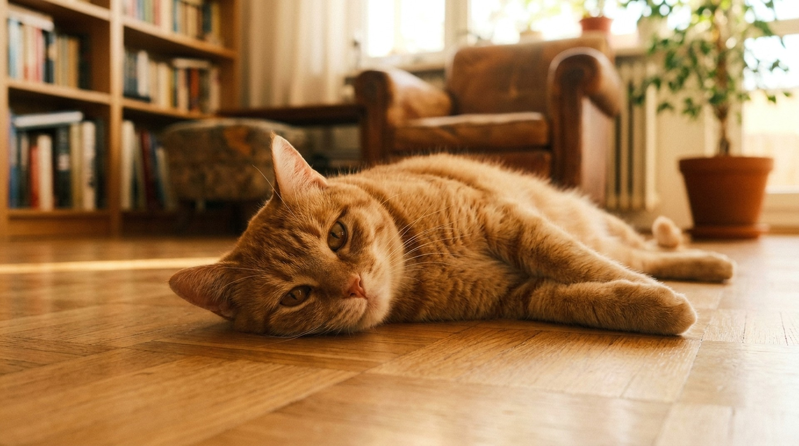

Кошка орёт в три часа ночи, катается по полу, не ест и не даёт спать всей семье. Это течка — и у большинства хозяев она вызывает панику при первом разе. Всё, что нужно знать: как это устроено физиологически, что реально помогает без гормонов и почему «подождать» — худшая стратегия.
🐾 Спросите AI-ветеринара прямо сейчас
AnimaLife — приложение, где AI-ветеринар отвечает на вопросы о кошке или собаке 24/7. Бесплатно, без записи и очередей.
Кошки — индуцированные овуляторы. Это значит: овуляция у них происходит не сама по себе в середине цикла (как у людей и собак), а только в ответ на спаривание. Если спаривания не было — яйцеклетки не вышли, гормональный цикл продолжается.
Течка (эструс) — это период сексуальной рецептивности, когда кошка готова к спариванию. В это время резко возрастает уровень эстрогенов — именно они вызывают поведенческие изменения: голосовую активность, позу, беспокойство.
Кошка не испытывает боли во время течки. Всё поведение — не страдание, а инстинкт размножения. Но это не значит, что ей комфортно: гормональный стресс реален, и он нарастает при каждой нереализованной течке.
Зависит от породы, сезона рождения и условий жизни:
Кошки — сезонные полиэструсы. Пик течек — весна и начало осени (длинный световой день). Домашние кошки при искусственном освещении могут входить в течку круглый год без чёткой сезонности.
Один эструс длится 5-10 дней — в среднем около недели. Если спаривания не было:
Это не патология — это норма. Но норма, которая изматывает и кошку, и хозяина.
Первая течка часто пугает — кошка ведёт себя так, будто ей плохо. Признаки:
Как отличить от болезни: при болезни кошка прячется и перестаёт есть без поведенческих изменений. При течке — активна, ищет внимания, поза лордоза при поглаживании спины. Если признаки нетипичные или течка длится больше 2 недель — к ветеринару.
Полностью купировать течку без вмешательства нельзя. Облегчить состояние — можно:
Чего делать не нужно: кричать на кошку, закрывать в тёмном месте в одиночестве, принудительно удерживать. Это не помогает и усиливает стресс.
🐾 Дневник здоровья питомца — в кармане
Вес, прививки, симптомы и напоминания в одном приложении. AnimaLife следит за здоровьем питомца вместо вас.
Капли и таблетки типа «Контрасекс», «Секс-барьер», «Кот Баюн с эффектом» содержат синтетические прогестины — аналоги прогестерона. Они действительно останавливают течку.
Проблема в последствиях:
Большинство ветеринарных ассоциаций Европы и США не рекомендуют гормональные препараты для контроля течки у кошек. В России они продаются без рецепта — но это вопрос регуляции, а не безопасности.
Стерилизация (овариогистерэктомия — удаление яичников и матки) — единственный надёжный и безопасный способ прекратить течки навсегда. Дополнительно снижает риск:
Оптимальный возраст для стерилизации:
Когда нельзя стерилизовать: во время течки, при пиометре (сначала лечение, потом операция), при острых инфекциях.
«Надо дать родить хотя бы раз». Медицински это не имеет смысла. Роды не «исполняют материнский инстинкт» и не защищают от болезней. Это человеческая проекция.
«Кошка потолстеет». Метаболизм снижается примерно на 20%. Это решается уменьшением порции на 20% и выбором корма для стерилизованных кошек. Ожирение — не следствие операции, а следствие переедания.
«Операция опасна». Современная анестезия и хирургия сделали риск минимальным. Статистика смертности при плановой стерилизации молодых здоровых кошек — менее 0,1%. Риск от нестерилизованной кошки (пиометра, рак) — значительно выше.
«Кошка изменится». Характер не меняется. Могут пройти поведенческие проявления, связанные с гормональным циклом (крики, метки), — но это плюс, а не минус.